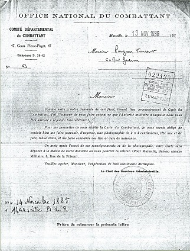

|
Lettre du Comité départemental du Combattant, le 13 novembre 1930. Elle informe Vincent que sa « demande de certificat, tenant lieu provisoirement de carte du Combattant » est acceptée et demande de lui faire parvenír « d'urgence, une photographie de 3x4 centimètres, tête nue et de face, tenue civile ». La « Carte sera déposée à la Mairie » un mois après l'envoi de ces renseignements. Vincent retourne cette lettre, complétée de sa date et lieu de naissance, avec la photo, au Comité départemental du Combattant. |
 |